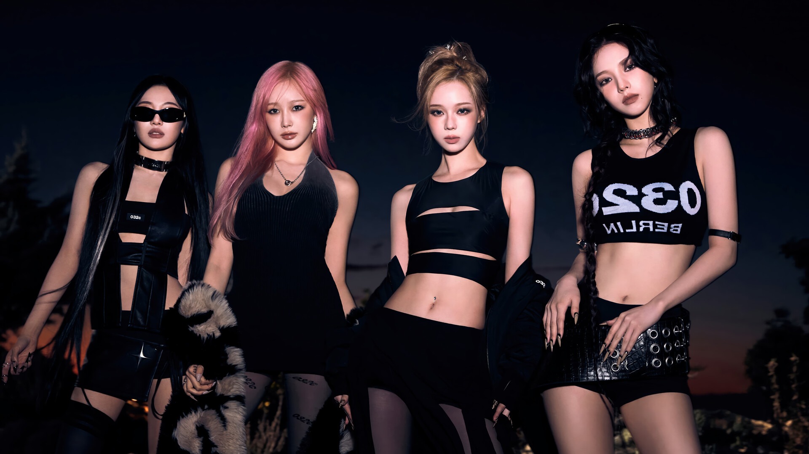

About aespa
AESPA is a four-member girl group under SM Entertainment that debuted in 2020. The members are Karina, Winter, Giselle, and Ningning. What sets aespa apart is their innovative concept that merges the real world with a virtual universe, introducing AI counterparts called "æ" members. This unique storyline has gained them global attention as one of the most futuristic K-pop groups.
With hits like "Black Mamba," "Next Level," and "Savage," aespa has shown powerful vocals, trendsetting fashion, and dynamic performances. Their fandom, MY, supports them in breaking boundaries and setting new standards for creativity in K-pop.
